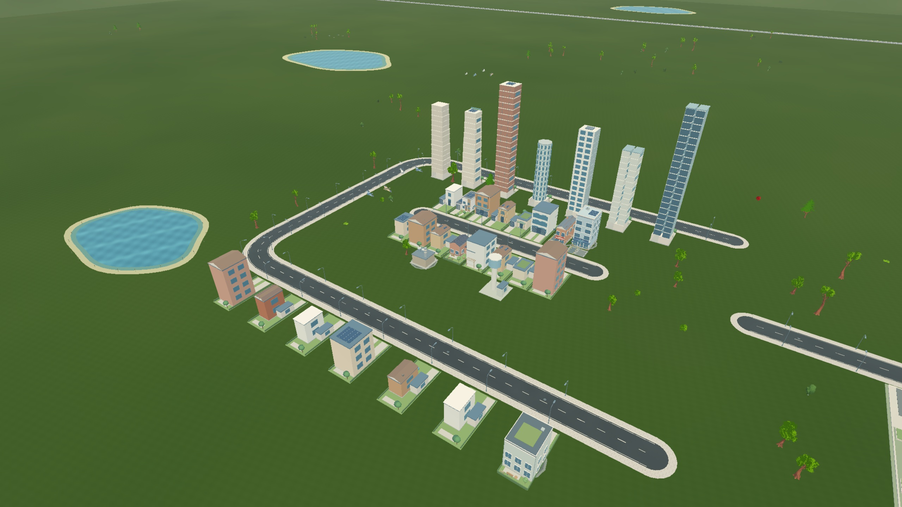
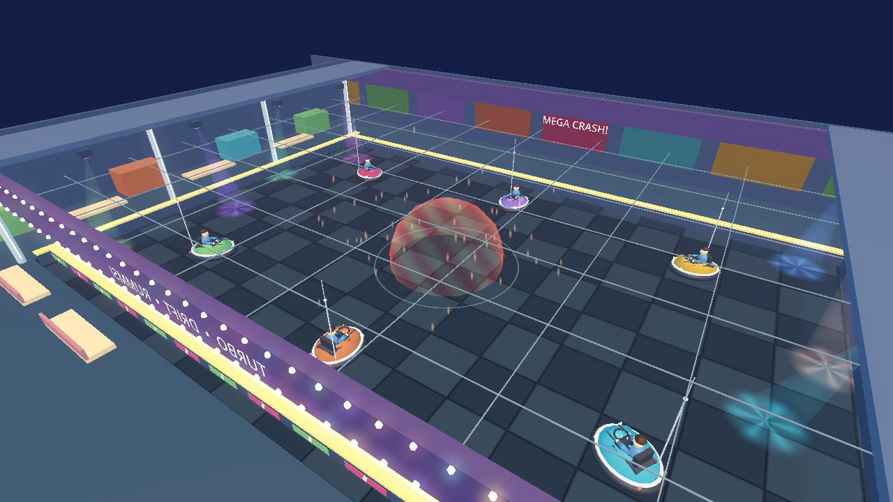
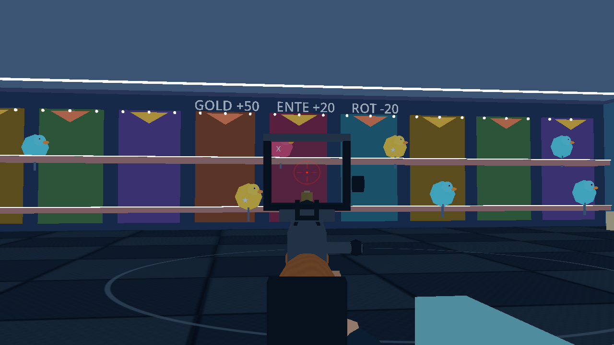

Installer herunterladen
Öffne den kleinen Windows-Installer. Er lädt die aktuelle Version und legt Civic Hijack auf deinem Desktop ab.
Eine Stadt. Tausend Geschichten. Aus einer kleinen Straße wird eure eigene Stadt. Plant Viertel, bringt Leben auf die Straßen und erlebt Civic Hijack zusammen mit euren Freunden.

AUS DEM SPIELKeine ZIP-Dateien hin- und herschieben. Der Launcher kümmert sich um eure Spielversion.
Öffne den kleinen Windows-Installer. Er lädt die aktuelle Version und legt Civic Hijack auf deinem Desktop ab.
Beim Start prüft der Launcher die Version und lädt verfügbare Updates. Dabei verwendet er möglichst kleine Differenzpakete.
Spiel starten, eine Stadt aufbauen und Freunde in den Koop einladen. Eure bestehenden Spielstände bleiben erhalten.
Erkunde die Stadt im Auto oder wechsle mit deinen Freunden in ein Kirmesspiel. Die Stadt läuft währenddessen weiter.

Ramme deine Freunde beim Autoscooter durch die Halle. Wähle die Rundenzeit oder ergänze NPC-Gegner mit passender Schwierigkeit.

Am Schießstand zählt jeder Treffer. Goldziele, Kombos und gemeinsame Ranglisten machen aus einer Pause ein kleines Duell.
Das Wichtigste zur Installation und zu Updates.
Der Installer hat noch kein anerkanntes Windows-Herausgeberzertifikat. Browser oder Windows können deshalb eine Warnung anzeigen. Der Launcher prüft heruntergeladene Updatepakete mit Signatur und Prüfsummen; das ersetzt keine Windows-Herausgebersignatur.
STADTLAND heißt jetzt Civic Hijack. Deine Städte und dein Benutzerprofil liegen getrennt von den installierten Spieldateien. Launcher-Updates ersetzen diese Daten nicht. Auf demselben Windows-Benutzerkonto kannst du deine vorhandenen Städte weiterhin laden.
Nein. Nach der ersten Installation prüft der Launcher beim Öffnen auf neue Versionen. Er lädt und installiert Updates automatisch. Wenn ein Differenzpaket nicht verwendet werden kann, lädt er das vollständige aktuelle Paket.
Eine bereits installierte Version lässt sich auch starten, wenn der Updateserver gerade nicht erreichbar ist. Für Online-Koop und den erstmaligen Download brauchst du eine Internetverbindung.
Öffnet beide den Launcher und lasst das Update abschließen. Für Koop sollten alle dieselbe Spielversion verwenden.
Im Launcher gibt es „Reparieren“. Damit werden die Spieldateien geprüft und bei Bedarf durch ein vollständiges Paket ersetzt. Deine Spielstände bleiben erhalten.
Der Download ist für Windows 10 oder Windows 11 auf einem 64-Bit-PC. Der kleine Installer lädt das vollständige Spiel nach; der Launcher zeigt den Fortschritt an.
Civic Hijack für Windows · mit automatischen Updates